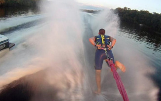

Ski Practices
Our team practices are scheduled at various times during the day depending on our boat driver’s schedules. After joining the team you will be given access to our signup sheet enabling you to view the available times. Skiers sign up for one-hour sessions with two other members and distribute the time evenly. Fall season usually runs throughout October and spring starts in April, depending on the weather conditions. If you are interested in more information please email someone on our executive board or come to one of our team meetings.
Members are able to practice whatever they want behind the boat for their time. We have all the equipment needed for slalom, trick, jump, wakeboarding, and even trick!

Directions to the Practice site
To get to the practice site drive down Water Street and turn north on Fifth avenue (towards Luther Midelfort Hospital) Cross Lake Street and Madison Street (Going Straight) Turn left at the "T" onto Platt Street, follow the road, it will turn into Third Street (and no you cannot follow Third the entire way from campus) Follow this road all the way to the stop lights on Hwy. 312, North Crossing, turn right. You will cross the river, the first road on the left, Riverview Drive, is the one you want! Turn left, and follow down about a quarter to half mile until you see the boat landing on the left.